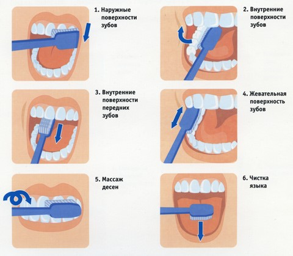
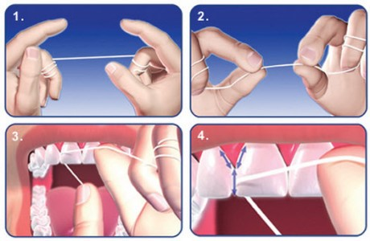

Памятка пациенту
Гигиена полости рта
Систематическое соблюдение гигиены полости рта и регулярные осмотры у врача – стоматолога ( не реже двух раз в год) позволят в значительной мере снизить риск стоматологических заболеваний. Как известно, профилактика в 15 раз дешевле предполагаемого лечения. Тщательная гигиена полости рта состоит из нескольких правил:
- Чистить зубы необходимо минимум 2 раза в день (в идеале чаще - после каждого приема пищи). Утром следует чистить зубы после завтрака, вечером – перед сном.
- Зубную щетку менять через каждые 2 месяца или по мере «распушения» щетинок.
- Для чистки зубов следует использовать зубные пасты:
- President Unique (с кальцием) или Classic (с фтором), Colgate 360◦ или Максимальная защита от кариеса, Rocs активный кальций или др., Lacalute fluor и basic
- President Activ, Colgate Лечебные травы или Прополис, Rocs, Lacalute Flora и fitoformula, Parodontax
- Rocs Sensitive, Sensodyne, President Sensitive, Colgate Sensitive pro-relief, Lacalute Sensitive и Extra Sensitive.
- Rocs (magic whitening, sensation whitening, отбеливающая, кофе и табак), President White или Renome , Zact (для любителей кофе и курильщиков).
- Зубные щетки:
- С жесткой щетиной
- С мягкой щетиной
- С щетиной средней жесткости
- Ополаскиватели полости рта:
- Rocs, Listerine expert защита от кариеса, Colgate plax комплексная защита, President classic plus (с кальцием) или Unique (с фтором) и др.
- Listerine expert защита десен, Colgate plax лечебные травы, Лесной бальзам, President, Lacalute Flora, Parodontax
- President Sensitive, Lacalute Sensitive, Colgate Sensitive pro relief
- Rocs Black Edition, Listerine Expert белизна зубов, Lacalute White, President White plus
- Зубная нить:
- Круглая вощеная
- Круглая невощеная
- Лента
- Дополнительно к вышеперечисленным средствам гигиены Вы можете использовать ирригаторы.
Ирригатор полости рта эффективно очищает пространство между зубами и зубодесневые карманы. Мощный пульсирующий напор воды массирует десны, улучшая кровообращение. Ирригатор особенно необходим для ухода за протезами зубов, коронками и брекет-системами.
Ирригаторы в первую очередь подразделяются по типам: стационарный (требует стационарной установки и розетки рядом с ванной) и портативный (переносной ирригатор, который работает от батарейки и может использоваться в поездках, а так же удобен в ваннах, где нет розетки). Другие важные параметры, которые различают ирригаторы, — это напор струи, количество насадок, а также специальные режимы (например -микропузырьковая технология).
В резервуар ирригатора Вы можете налить антисептический р-р (отвары ромашки, шалфея, коры дуба, хлоргексидин 0,05%, мирамистин и др.), готовый ополаскиватель для полости рта и даже обычную воду (кипяченую).
Чистить зубы правильно.
Чистить зубы нужно «выметающими» движениями – от десны к жевательной или режущей поверхности или круговыми движениями, при этом массируя десну.
Чистка зубов должна занимать минимум 2 минуты. По 1 минуте на каждую челюсть.
Делим челюсть на 2 половинки – правую и левую и чистим каждую по 30 секунд – по 10 секунд каждую поверхность зуба (язычную/небную, щечную, жевательную/режущую) как показано на рисунке 1. После чистки зубов следует аккуратно почистить язык.
Как пользоваться зубной нитью или лентой (флоссом).
Отрежьте около 20 см нити и намотайте её концы на средние пальцы рук. Аккуратно введите её в межзубной промежуток до десны, прижмите нить к контактной поверхности зуба и легкими движениями вверх-вниз очищайте межзубной промежуток (рисунок 2). При необходимости повторите.
